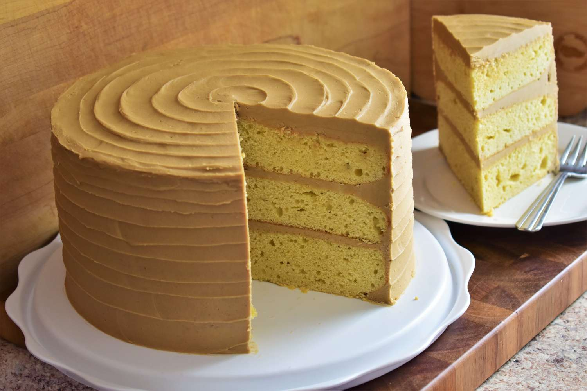

Caramel Cake

Ingredients
Cake:
- 3 cups white sugar
- 1 1/2 cups butter
- 5 large eggs
- 3 1/2 cups all-purpose flour
- 1/2 teaspoon baking powder
- 1/4 teaspoon salt
- 1 1/4 cups whole milk
- 1 teaspoon vanilla extract
Icing:
- 1 (16 ounce) package brown sugar
- 1 cup butter
- 1/4 teaspoon salt
- 2/3 cup evaporated milk
- 1 (16 ounce) package confectioners' sugar, sifted
- 2 teaspoons pure vanilla extract
Steps
- Preheat the oven to 350 degrees F. Grease and flour three 9-inch cake pans
- Place white sugar and butter into a mixing bowl. Beat with an electric mixer on medium speed until light and fluffy. Add eggs, one at a time, mixing well after each addition
- Combine flour, baking powder, and salt in a separate bowl. Add flour mixture in batches, alternating with milk, beating batter briefly after each addition. Add vanilla extract; beat until batter makes ribbons when falling from the beaters. Divide batter among the prepared cake pans.
- Bake in the preheated oven until a toothpick inserted in the center comes out clean, about 30 minutes. Cool on a wire rack for 5 minutes. Run a table knife around the edges to loosen. Invert carefully onto a cooling rack. Let cool, about 30 minutes
- Combine brown sugar, butter, and salt in a saucepan over medium heat. Stir until brown sugar is dissolved, about 3 minutes. Add evaporated milk and continue stirring. Bring to a gentle boil and let bubble for about 4 minutes, stirring constantly to avoid sticking. Remove from heat and allow to cool, about 5 minutes
- Mix confectioners' sugar and vanilla extract into brown sugar mixture using an electric mixer until icing caramelizes and thickens to the desired consistency
- Spread icing onto cooled cake layers. Stack layers; ice top and sides